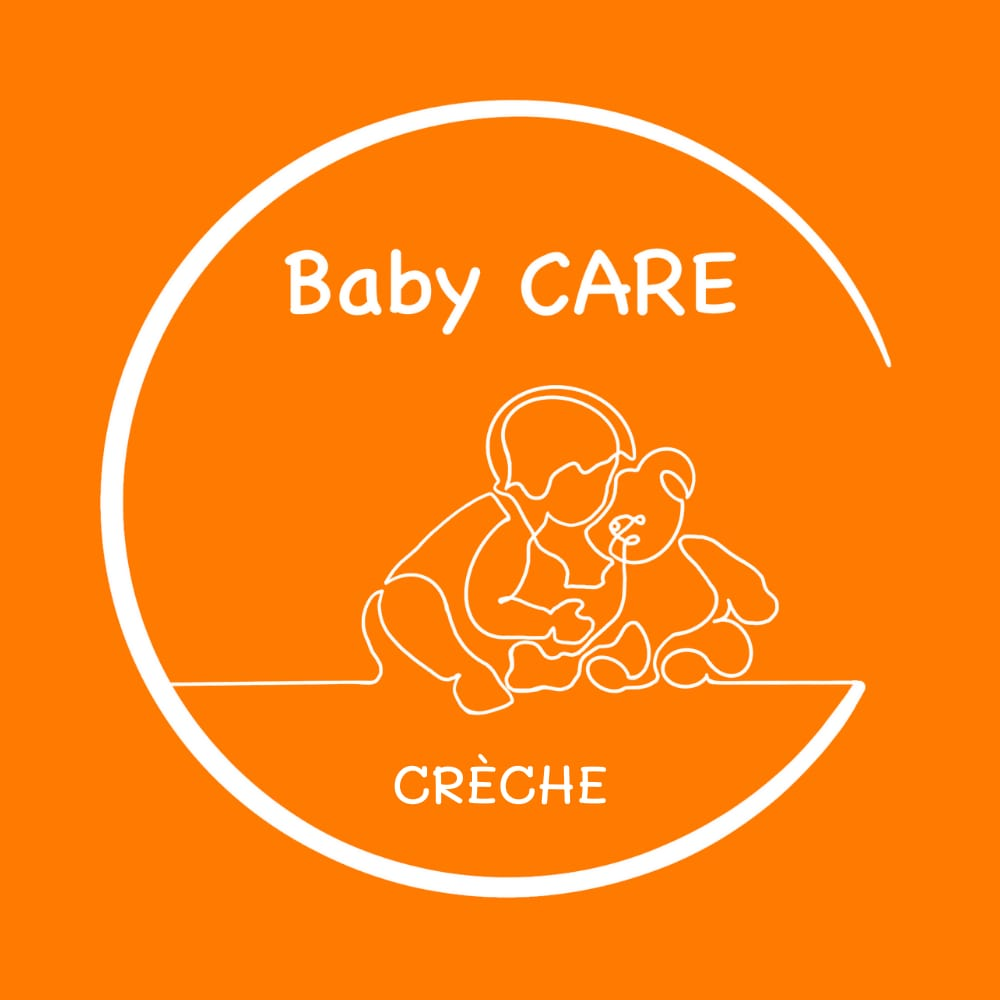

Crèche Baby-CARE
Une crèche éco-responsable et participative, où chaque enfant grandit dans un cadre familial, multilingue, chaleureux et sécurisant.

Un accueil attentif et participatif
Baby-CARE se définit comme une crèche éco-responsable et participative.
Éco-responsable, car nous souhaitons limiter notre empreinte écologique et notre impact sur l’environnement à deux niveaux : circuit court pour nos aliments, jeux et matériels durables, ainsi que l’utilisation de langes fabriquées et recyclées en Belgique.
Participative, car nous collaborons étroitement avec tous les acteurs autour de l’enfant. Les parents, premiers acteurs, sont invités à participer à la vie de la crèche en apportant leurs idées ou en participant à des activités avec les enfants : atelier lecture, musique, activités particulières, etc.
Confiance, collaboration, respect et responsabilité sont nos quatre valeurs de travail.
Grandir et s’épanouir
Dans un cadre familial, multilingue, chaleureux et sécurisant, nous prenons soin des enfants âgés de 3 mois à 3 ans en participant activement à leur épanouissement personnel et émotionnel.
Chaque enfant est accompagné au travers d’activités avec beaucoup de Câlins, d’Amour et de Rires Ensemble (CARE). Nous mettons tout en œuvre pour garantir le bien-être psychomoteur, affectif et social des enfants.
L’individualité de chaque enfant constitue la richesse de notre milieu d’accueil. Nous la respectons et la mettons en avant.
Une équipe de professionnels attentifs aux besoins de chaque enfant et aux attentes de leurs parents est toujours disponible.
Activités et autonomie
À travers différentes activités proposées en français et en néerlandais, ainsi que dans les situations quotidiennes, nous accompagnons les enfants vers leur autonomie en privilégiant leur créativité et leur indépendance.
Nous encourageons la solidarité, la collaboration, le respect de l’autre et de soi, ainsi que le partage.
Informations pratiques
Adresse : Rue Buffon 11, 1070 BruxellesHoraires : du lundi au jeudi de 07h30 à 18h00 et le vendredi de 07h30 à 16h00.
Visites : chaque dernier mercredi du mois à 9h30.
Fermetures :
- 2 semaines en juillet et 1 semaine en août pour les vacances d’été ;
- 1 semaine entre Noël et le Nouvel An ;
- les jours fériés et autres jours éventuels.